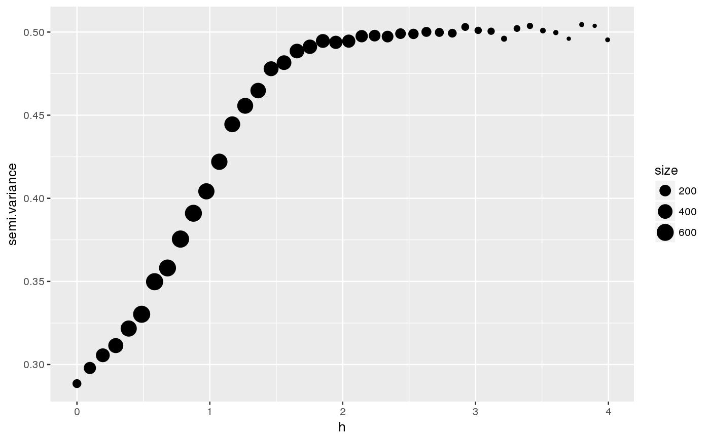

Calculate empirical semi variance from genotype matrix.
CalculateEmpiricalGenSemivariogram(X, ploidy, coord, breaks = "FD", na.rm = TRUE)
| X | Genotype matrix. |
|---|---|
| ploidy | The number of chromosome. |
| coord | Coordinate matrix. |
| breaks | Same parameter that in hist R base function. |
| na.rm | A logical indicating whether missing values should be removed. |
Semi-variance
library(tess3r) data("data.for.test", package = "tess3r") em.vario <- CalculateEmpiricalGenSemivariogram(X = data.for.test$X, ploidy = 1, coord = data.for.test$coord, breaks = "FD", na.rm = TRUE)#>#>ggplot2::ggplot(em.vario, ggplot2::aes(x = h, y = semi.variance, size = size)) + ggplot2::geom_point()